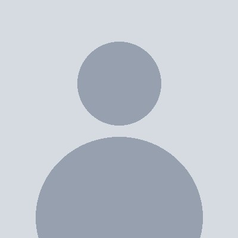

Tom-Thomas Printac
Information Systems & Management Student | Product & Project Management | Data & AI Automation
General Information
- Location: Tel Aviv, Israel
- Languages: Hebrew (Native), English (Full Professional), Spanish (Professional Working)
- Availability: Available for a full-time internship
Summary
Information Systems & Management undergraduate at Ben-Gurion University (B.Sc. expected 2027) with hands-on
experience inside a technology company. At Buildots I was the single point of contact between enterprise customers
and R&D, QA and project management. Since then I have led a product of my own from first release through live
operation, defined and reported its KPIs, and built AI-assisted automations that remove manual effort from tracking
and reporting.
Education
Work Experience
-
Project Configuration Manager - Buildots
2023 - 2024
- Single point of contact through implementation: absorbed requests from the customer, sales, project
management, R&D and QA, and translated them into technical requirements.
- Set up and onboarded new enterprise deployments end to end, validating each configuration against the
source before go-live.
- Ran change requests through a documented review and approval flow with R&D, QA and the customer.
- Queried live deployment data with SQL to catch inconsistencies and turned recurring issues into process
fixes.
-
Product Lead & Co-Founder - Golim, Real-Time Consumer App (World Cup 2026)
2026
- Founded and shipped a real-time social prediction game on iOS, Android and web; reached #12 in the App
Store Sports category (Israel) within 48 hours of launch.
- Ran delivery end to end: set release criteria, shipped versioned releases on three platforms and monitored
production during live matches.
- Designed the Postgres data model and wrote the SQL behind live scoring and leaderboards; led external
partnerships including a World Cup sponsorship with Papa John's.
-
Project & Strategy Manager - Game Changers (Sports-Tech)
2024 - Present
- Coordinate multiple initiatives across stakeholders.
- Translate fuzzy goals into prioritized, measurable milestones delivered on time and within scope.
Military Service
Skills
Tools & Data
- SQL (advanced) over Postgres: joins, aggregations, window functions
- Excel and Google Sheets: pivots, lookups, dashboards
- Jira and Git
- Python (working level)
AI & Automation
- Claude API, prompt engineering, RAG and agentic workflows
- AI-assisted development with Claude Code and Cursor
- Automated workflows for tracking, data validation and recurring reporting
Working Style
- Prioritizing many parallel requests from different teams
- Working to documented processes and procedures
- Root-cause investigation and corrective actions to closure
- Clear written and verbal communication with customers and senior stakeholders
More About Me